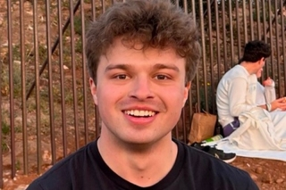

Cornell University
Musharoff Research Lab
Principal Investigator
Shaila Musharoff
Assistant Professor Department of Computational Biology
NIH FIRST and CALS Dean Faculty Cohorts Faculty Fellow, Atkinson Center for a Sustainable FuturePh.D. Genetics, Stanford University, 2015
M.S. Computer Scinece, New York University, 2009
B.S. Genetics & Computer Science, Rutgers University, 2006
Email: sam442@cornell.edu
Address: 102F Weill Hall, Ithaca NY 14853
Graduate Students

Oona Shigeno Risse-Adams
Oona received her B.S. in Statistics from University of California, Berkeley in 2024. Her current research focuses on problems in statistical genetics, particularly differences in trait and disease outcomes in the context of GxE interactions.
Email: or93@cornell.edu
Undergraduate Students
